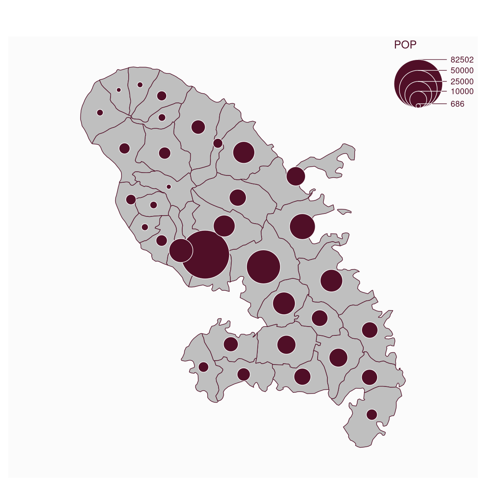
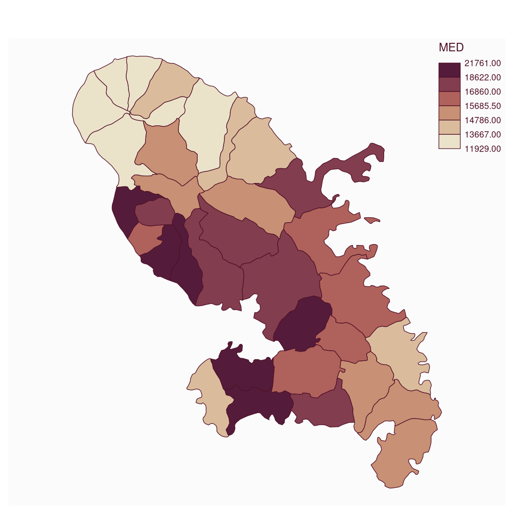
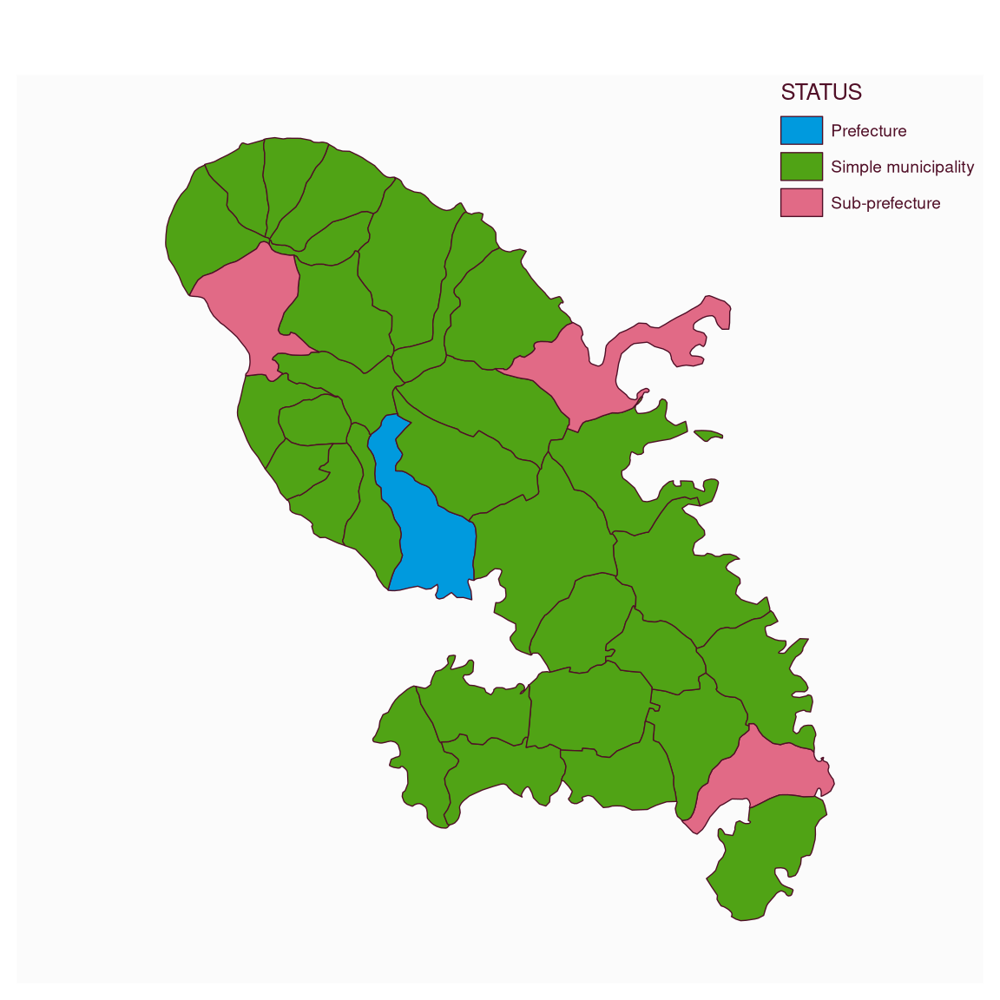
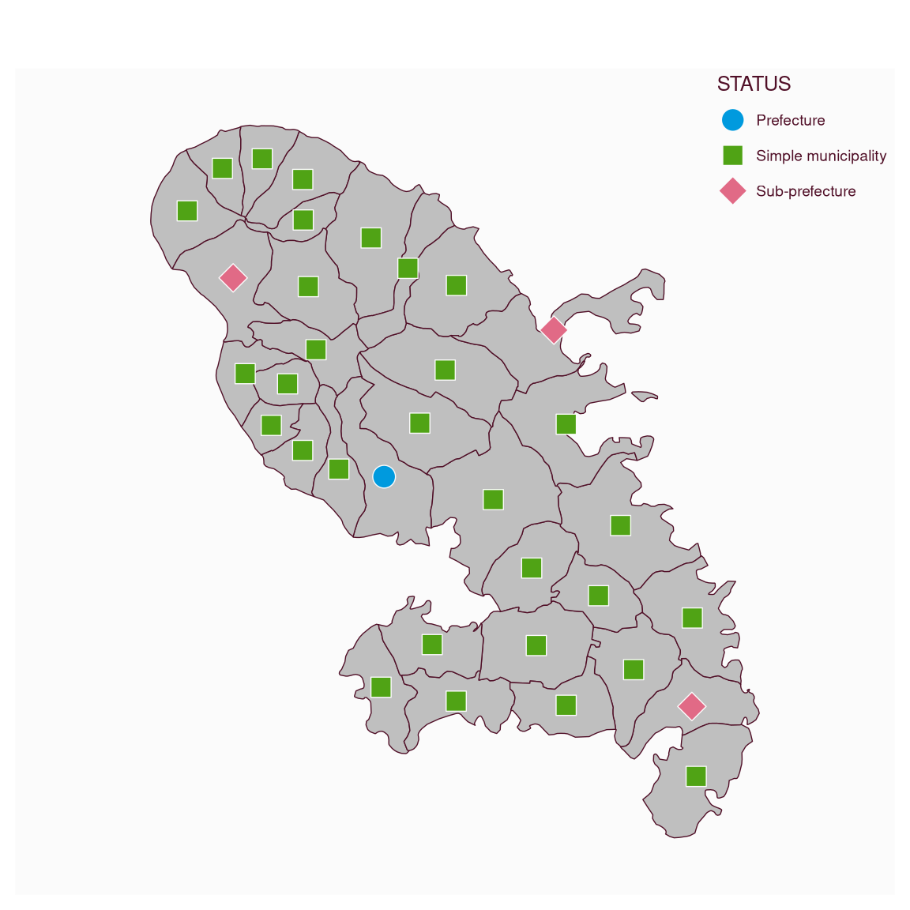
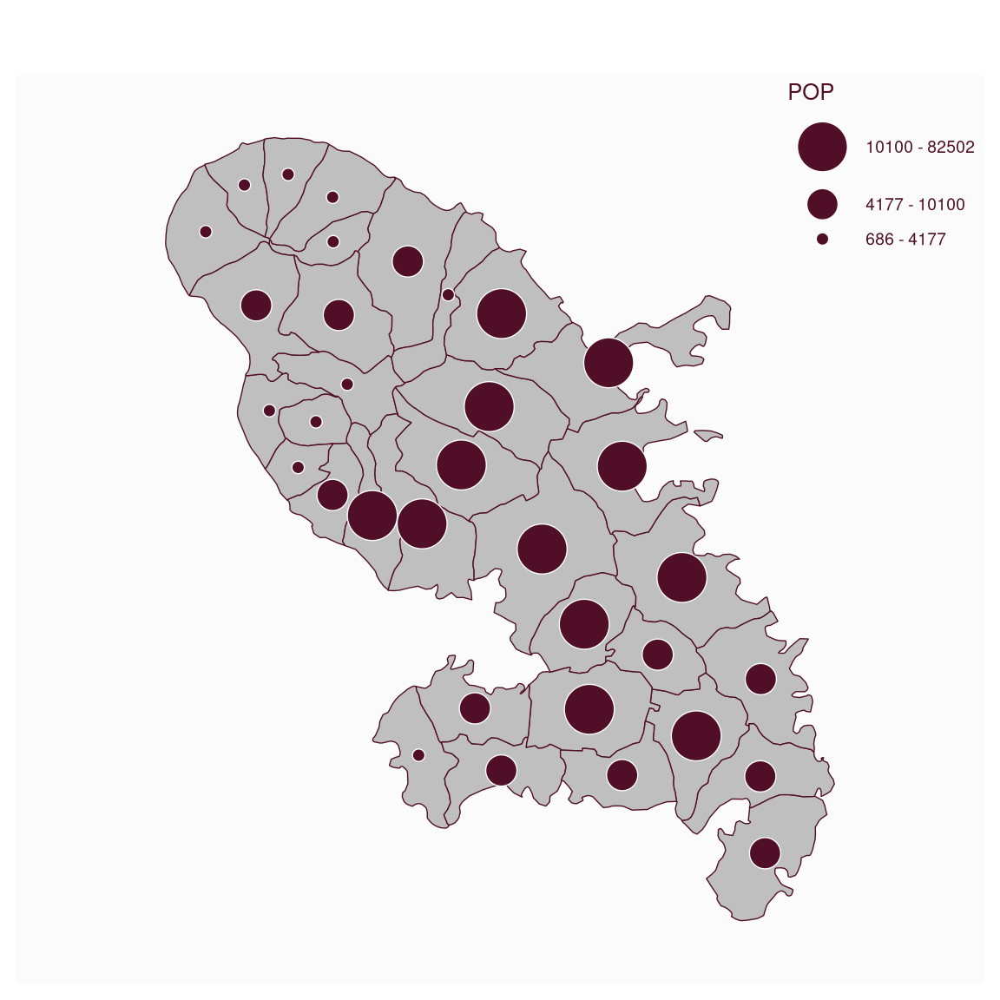
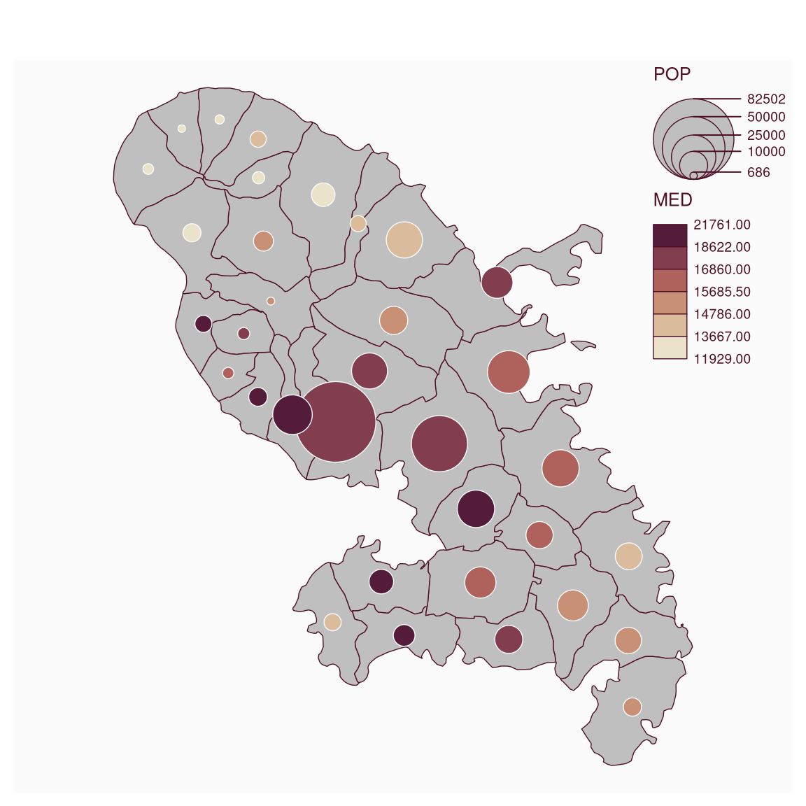
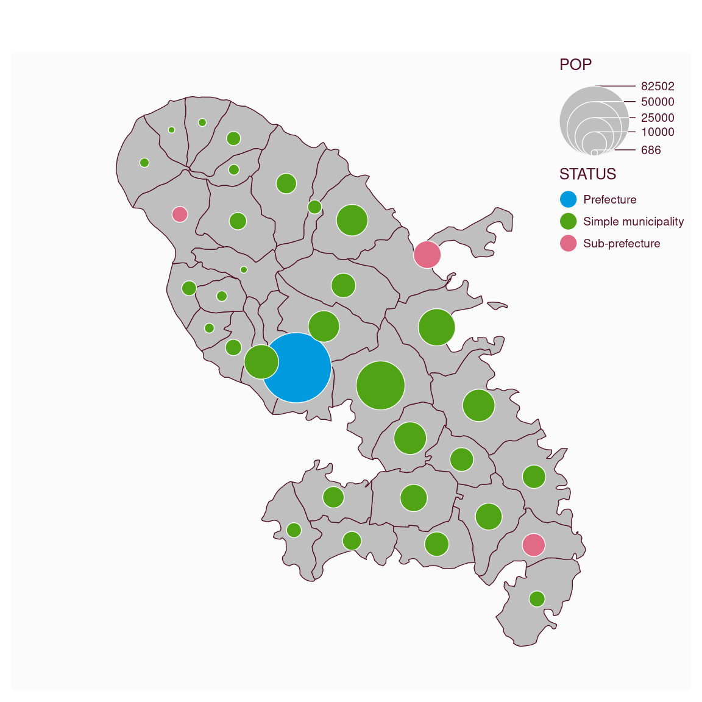
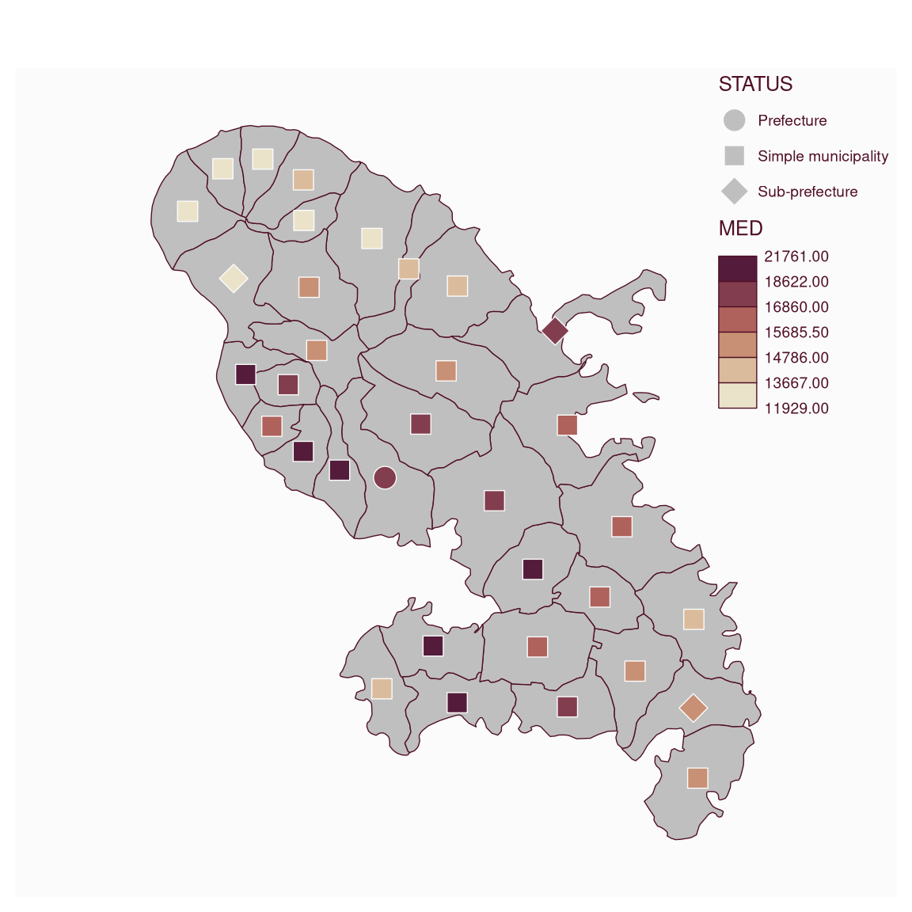

mf_map() is the main function of the package, it displays map layers on a
georeferenced plot.
mf_map() has three main arguments:
x, an sf object,var, the name(s) of a variable(s) to map,type, the map type.
Relevant arguments and default values are different for each map type and are described in dedicated help pages (see base, choro, typo, prop, prop_choro, prop_typo, symb, grad or symb_choro).
Usage
mf_map(x, var, type = "base",
breaks, nbreaks, pal, alpha, rev, inches, val_max, symbol, col,
lwd_max, val_order, pch, cex, border, lwd, col_na, cex_na, pch_na,
expandBB, extent, bg, add,
leg_pos, leg_title, leg_title_cex, leg_val_cex, leg_val_rnd,
leg_val_dec, leg_val_big, leg_no_data, leg_frame, leg_frame_border,
leg_horiz, leg_adj, leg_bg, leg_fg, leg_size,
leg_box_border, leg_box_cex, ...)Arguments
- x
object of class
sf- var
name(s) of the variable(s) to map
- type
base: base maps
choro: choropleth maps
typo: typology maps
prop: proportional symbols maps
prop_choro: proportional symbols with choropleth coloration
prop_typo: proportional symbols with typology coloration
symb: symbols maps
grad: graduated symbols maps
symb_choro: symbols with choropleth coloration
- breaks
either a numeric vector with the actual breaks, or a classification method name. The main methods are 'quantile', 'equal', 'msd', 'ckmeans' (natural breaks), 'Q6' and 'geom'. See mf_get_breaks for details.
- nbreaks
number of classes
- pal
a set of colors (hex codes) or a palette name. Palette names can be obtained with hcl.pals.
- alpha
colorpalopacity, in the range [0,1] (0 means transparent and 1 means opaque). Default is set to 1.- rev
if
palis a palette name, whether the ordering of the colors should be reversed (TRUE) or not (FALSE)- inches
size of the largest symbol in inches (radius for circles, half width for squares)
- val_max
maximum value corresponding to the largest symbol or line
- symbol
type of proportional symbols, either "circle" or "square"
- col
a color, hex code or color name given by colors
- lwd_max
width of the largest line
- val_order
modalities order in the legend, a character vector that matches
varmodalities- pch
type of symbol to use for points, see pch
- cex
symbols size, 2 means 2 times bigger
- border
border color for polygons or symbols. It can be a hex code or a color name given by colors.
- lwd
border width of polygons, symbols or lines
- col_na
color for missing values, a hex code or a color name given by colors.
- cex_na
symbols size for missing values on points
- pch_na
symbol to use for missing values on points, see pch
- expandBB
expension of the map area in each direction (bottom, left, top, right). The expension is expressed as a share of
xwidth (for left and right values) or a share ofxheight (for bottom and top values).- extent
sfobject used to define the map extent; defaults tox.extentandxmust use the same CRS.- bg
background color of the map, hex code or color name given by colors, ignored if
add = TRUE- add
whether to add the layer to an existing plot (TRUE) or not (FALSE)
- leg_pos
position of the legend, one of 'topleft', 'top','topright', 'right', 'bottomright', 'bottom', 'bottomleft', 'left' or a vector of two coordinates in map units (c(x, y)). Use
NAto avoid plotting the legend, use 'interactive' to choose the legend position by clicking on the map.- leg_title
legend title
- leg_title_cex
size of the title
- leg_val_cex
size of the values
- leg_val_rnd
number of decimal places of the values displayed in the legend
- leg_val_dec
decimal separator
- leg_val_big
thousands separator
- leg_no_data
label for missing values
- leg_frame
whether to add a frame to the legend (TRUE) or not (FALSE)
- leg_frame_border
border color of the legend frame
- leg_horiz
display the legend horizontally (for proportional symbols and choropleth types)
- leg_adj
adjust the position of the legend in x and y directions
- leg_bg
color of the legend background
- leg_fg
color of the legend foreground
- leg_size
size of the legend. Combine this argument with
leg_title_cexandleg_val_cex.- leg_box_border
border color of legend boxes (for types related to choropleth and typology)
- leg_box_cex
width and height size expansion of boxes
- ...
ignored
Examples
mtq <- mf_get_mtq()
# basic examples
# type = "base"
mf_map(mtq)
# type = "prop"
mf_map(mtq)
mf_map(mtq, var = "POP", type = "prop")

# type = "choro"
mf_map(mtq, var = "MED", type = "choro")

# type = "typo"
mf_map(mtq, "STATUS", "typo")

# type = "symb"
mf_map(mtq)
mf_map(mtq, "STATUS", "symb")

# type = "grad"
mf_map(mtq)
mf_map(mtq, var = "POP", type = "grad")

# type = "prop_choro"
mf_map(mtq)
mf_map(mtq, var = c("POP", "MED"), type = "prop_choro")

# type = "prop_typo"
mf_map(mtq)
mf_map(mtq, var = c("POP", "STATUS"), type = "prop_typo")

# type = "symb_choro
mf_map(mtq)
mf_map(mtq, var = c("STATUS", "MED"), type = "symb_choro")
